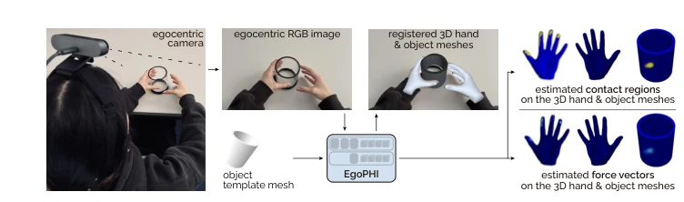
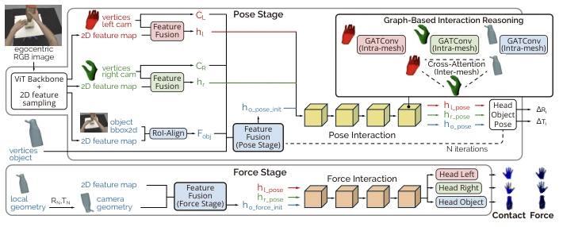
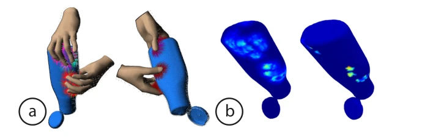
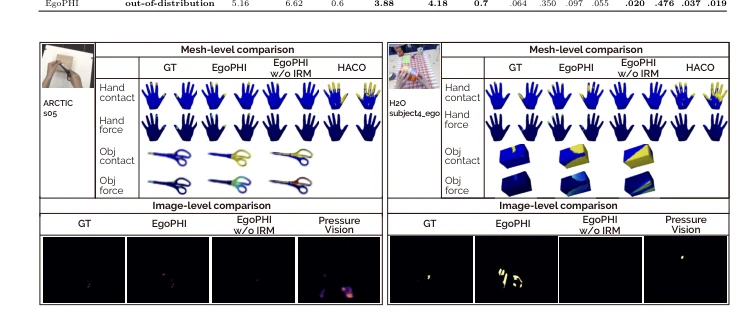
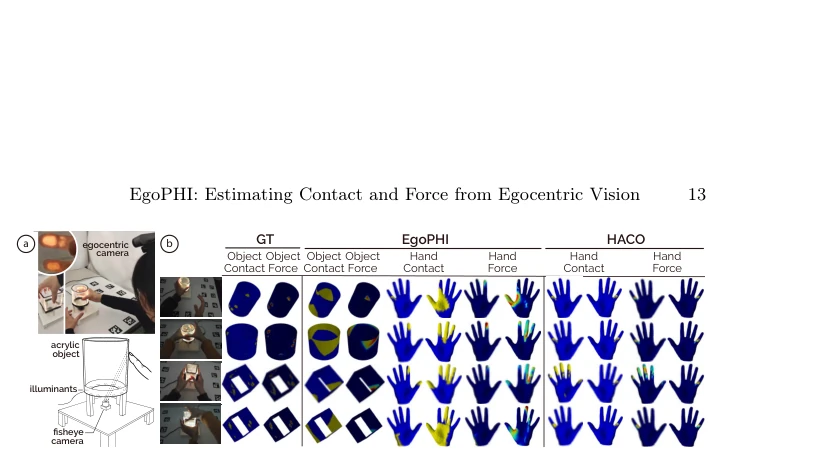
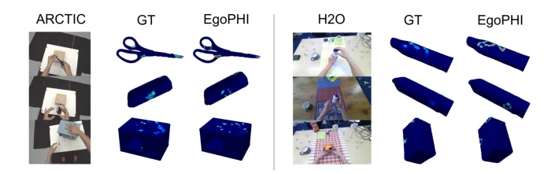

EgoPHI: Estimating Contact and Force from Egocentric Vision
Andela Ilic, Rachel Schuchert, Yijing Jiang, Christian Holz abspdf
论文点评Review
EgoPHI 号称首个从单目 Egocentric 视角同时估计手和物体 3D 接触与力的模型，这确实是个硬骨头。毕竟力这东西看不见摸不着，还得靠仿真数据监督，有点“无中生有”的意味。虽然它在 ARCTIC 和 H2O 上跑赢了 HACO [21] 和 PressureVision [12]，力估计误差降了 2N，但有个致命短板：推理时必须提供物体 3D 模板网格。这哪是纯视觉感知，简直是“视觉+CAD 辅助”。另外，仿真到真实的迁移只在立方体和圆柱体上验证了，真正的复杂曲面还得靠猜。不过能把力估计从平面扩展到非平面物体，确实给具身智能的物理理解开了个新口子，就是这“物理”二字，目前还略显单薄。
EgoPHI claims to be the first model to simultaneously estimate hand and object 3D contact and force from a monocular Egocentric perspective, which is indeed a tough nut to crack. After all, force is invisible and intangible, requiring simulation data for supervision, carrying a hint of "creating something from nothing". Although it outperforms HACO [21] and PressureVision [12] on ARCTIC and H2O, reducing force estimation error by 2N, it has a fatal flaw: object 3D template meshes must be provided during inference. This is not pure visual perception at all, it is almost "vision+CAD assistance". Additionally, sim-to-real transfer was only verified on cubes and cylinders; true complex surfaces still rely on guessing. However, extending force estimation from planar to non-planar objects does open a new avenue for embodied intelligence's physical understanding, though the word "physics" itself currently appears somewhat thin.
Understanding hand-object interaction cannot rely solely on contact points; the distribution and magnitude of force are the core of physical dynamics [20]. Existing work mostly focuses on contact region detection, such as HACO [21] or 2D pressure estimation [12], but 3D force inference under monocular RGB is extremely difficult, affected by occlusion and depth missing. PressureVision [12] can only handle planar surfaces or hands, unable to cover object surfaces. The lack of scalable force annotation data is even more of a bottleneck, causing models to struggle with generalization. EgoPHI aims to fill this gap, inferring physics-grounded interaction from pure vision, providing key physical clues for robots learning human manipulation strategies.

Fig. 1: EgoPHI is the first vision-based model that estimates 3D forces and contact during interaction with articulated rigid objects. Given a single egocentric monocular RGB image and the object geometry, EgoPHI registers hand meshes to refine the object pose in a shared camera coordinate frame, and predicts dense per-vertex contact and force distributions over all meshes for physically grounded interaction reasoning.
The overall process is divided into three stages: feature extraction, pose iterative optimization, and force estimation. First, a ViT backbone extracts image features, projected to 3D mesh vertices. The core innovation lies in the Iterative Pose Optimization Module (IRM), which uses a Graph Attention Network (GAT) to encode intra-mesh and inter-mesh relations between hand and object, gradually correcting object pose. The force estimation stage, based on the final pose, predicts contact probability and force vectors. At the data level, the authors use the SOFA simulator [10] to enhance the ARCTIC dataset [9] into data with vertex-level force annotations, solving the supervision missing problem. The model decomposes force into magnitude and direction, trained jointly via weighted BCE and L2 loss. This combination of "simulation-generated ground truth + GNN inference" effectively alleviates force estimation bias brought by monocular depth uncertainty. Additionally, the IRM module, through multi-round iterative updates, significantly reduces vertex alignment error, making subsequent force prediction more accurate.

Fig. 2: EgoPHI’s 3-stage pipeline: (1) visual & geometric feature extraction with cross- modal fusion, (2) object pose estimation, and (3) contact and force estimation. Our novel Graph-Based Interaction Blocks perform the core 3D reasoning by encoding intra- mesh structure and inter-mesh relationships between the hands and object. These blocks represent the 3D pose and spatial configuration of each mesh relative to the others. We thus explicitly model proximity and geometric interaction, which is critical for inferring physically grounded forces.

Fig. 3: (a) Activation of collision detection: pink lines show line-line contact, blue lines show point-line contact, yellow lines show point-point contact, and red lines represent constraints. (b) Simulated forces before and after applying contact masks.
Evaluated on ARCTIC (in-dist) and H2O (out-dist), comparing HACO [21] and PressureVision [12]. Metrics include contact F1/IoU and force MAE/RMSE/vIoU. EgoPHI reduces MAE by approximately 2N in hand force estimation, and fills gaps in object contact and force estimation. Ablation experiments prove the IRM module significantly improves geometric alignment and force accuracy. More critically, the authors constructed a real object dataset with LED photosensitive sensors to verify sim-to-real transfer, proving the model can recover meaningful force distribution on non-planar real objects. Despite the small volume of real data, this is the first work validating visual force estimation on real non-planar objects.

Fig. 4: EgoPHI estimates dense per-vertex force and contact for both hands and ob- jects and outperforms the hand-only HACO baseline. EgoPHI’s projected 2D force distributions outperform PressureVision and align better with the egocentric image.

Fig. 6: (a) Apparatus of our real-world contact and force evaluation. Participants touched and grasped these two objects, which we constructed such that touch force corresponds to light intensity on the fingers and hands. (b) Qualitative results on real-world force recordings. While our experimental apparatus recorded ground-truth contact and force on the object only, we additionally show the estimated contact and force maps on the hands for visual comparison.
其他图片Other Figures

Fig. 5: Error-isolation analysis with ground-truth poses.